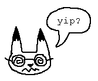
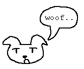

hello! cat here! welcome to the 2nd test page!! it's really exciting, right?? the thing about white voids like these is that the sheer emptiness really makes you think about the vastness of the universe!! how, in the end, we're all blips compared to the cosmos!
and think about it -- think about how exciting a blank canvas is! think about how much potential lies within one! my heart's racing just thinking about it!!
anywho, once you're done pondering all of this, feel free to go over to fox's page!
or you can see what dog's up to!
